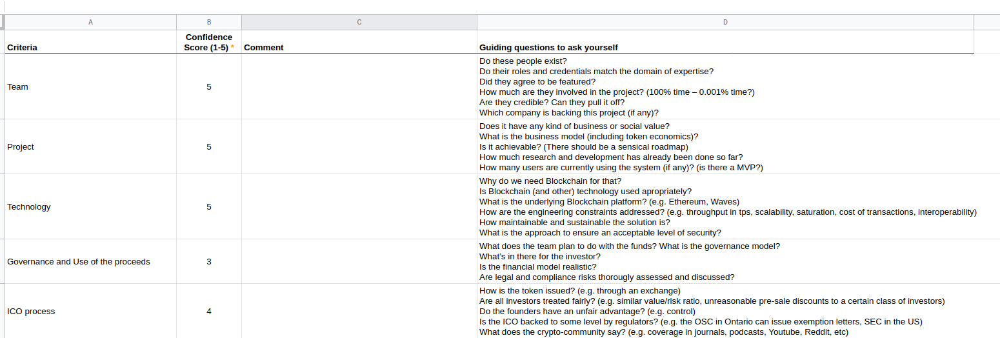

Lecture 2¶
Rubric¶
Rubric Template
Google sheet link for Rubric :
https://docs.google.com/spreadsheets/d/1chdEPmuCSIiLS0GUoZ3ikIGpqoihQb8qVRZMTyHU5pI/edit?usp=sharing
Rubric pdf for Dent
Rubric pdf for Kin
Comparison Essay¶
Dent and Kin coin, they are both for communication freeing the user. DENT is looking to take mobile data and turn it into a commodity by creating a global marketplace that allows anyone to buy and sell mobile data, regardless of which telco it comes from.As much as the project appears to be on the right path, the DENT token situation is concerning, to say the least. The DENT team controls roughly 40% of the tokens, which could easily lead to centralization issues. In addition, the price of the DENT token continues retreating, even as the broader cryptocurrency market has begun to stage a recovery.
What makes the Kin ICO so exciting is that this is a proven team, with demonstrated traction, working on an ambitious goal to change products that have hundreds of millions of people interacting with each other.In my opinion, Kin is sustainable coin beacause it has a chat apo as its underlining infrastructure & they want a soft roll out unlike Dent.